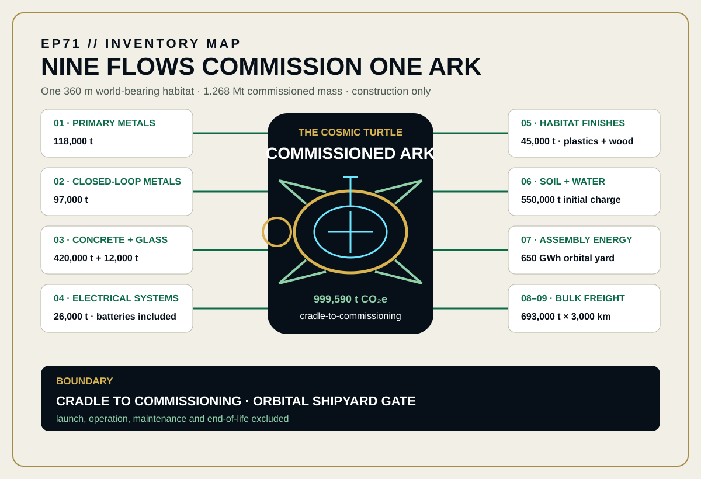
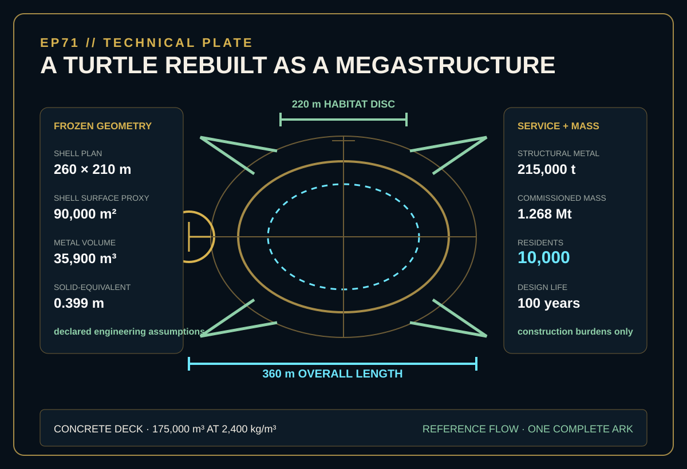
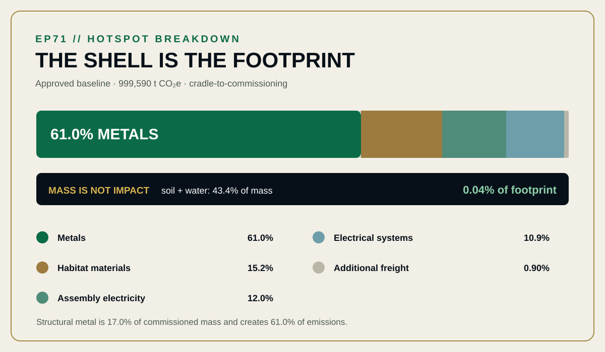

EPISODE #71 · MYTHS & LEGENDS
The Cosmic Turtle
What carbon burden is embedded before the first journey begins?
Narrative engineering screening · cradle-to-commissioning · operation is excluded.
THE SUBJECT
A world on its back. A finite construction bill.
The approved episode converts the cosmic-turtle image into one mobile closed-loop habitat commissioned at an orbital shipyard gate. The service is fixed at 10,000 residents over a 100-year design life, but the result counts construction only: material production, module fabrication, additional bulk freight, orbital-yard electricity and the initial soil-and-water charge.
The myth supplies the world-bearing form, not measurable dimensions. A 360 m overall length, 220 m habitat disc, 260 × 210 m shell plan, 215,000 t structural-metal system and 1.268 Mt commissioned mass are declared engineering assumptions. Launch, propulsion, food, crew activity, maintenance, replacements, end-of-life and credits remain outside the boundary.
360 m world-bearer
A 220 m habitat disc sits within the declared 360 m overall length.
1.268 Mt commissioned
The complete ark includes 550,000 t of initial soil and water.
61.0% metals hotspot
Primary and closed-loop structural metals dominate the baseline.
10,000 residents · 100 years
The design service normalizes to 1.00 t CO₂e per resident-year, construction only.
VISUAL MODEL
Nine flows commission one world-bearing ark
The inventory map preserves the approved material, energy and freight flows. The technical plate freezes the declared geometry, capacity and commissioned mass without extending the model into operation.


DETAILED LIFE CYCLE INVENTORY
Mass, electricity and freight before departure
Activity data and factors follow the approved episode. Displayed contributions are derived from the approved quantities and factors and reconcile to the approved 999,590 t CO₂e total before headline rounding.
| Stage | Component / activity | Activity data | Climate change | Modelling basis |
|---|---|---|---|---|
| Material production | Primary metals | 118,000 t | 450,990.1 t CO₂e · 45.12% | S1 · 3,821.95 kg CO₂e/t. DEFRA 2026 primary-metals material-use proxy. |
| Material production | Closed-loop metals | 97,000 t | 158,758.9 t CO₂e · 15.88% | S1 · 1,636.69 kg CO₂e/t. DEFRA 2026 closed-loop-metals material-use proxy. |
| Deck | Concrete | 420,000 t | 49,897.3 t CO₂e · 4.99% | S2 · 118.803 kg CO₂e/t. DEFRA 2026 concrete material-use factor. |
| Envelope | Glass | 12,000 t | 16,833.2 t CO₂e · 1.68% | S3 · 1,402.77 kg CO₂e/t. DEFRA 2026 glass material-use factor. |
| Systems | Electrical systems | 26,000 t | 109,269.9 t CO₂e · 10.93% | P1 · 4,202.69 kg CO₂e/t. Episode-weighted composite including batteries. |
| Habitat | Habitat finishes | 45,000 t | 84,652.7 t CO₂e · 8.47% | P2 · 1,881.17 kg CO₂e/t. Episode-weighted plastics-and-wood composite. |
| Habitat charge | Initial soil and water | 550,000 t | 352.0 t CO₂e · 0.04% | P3 · 0.640 kg CO₂e/t. Episode-weighted initial habitat-charge factor. |
| Assembly | Orbital-yard electricity | 650 GWh | 119,834.0 t CO₂e · 11.99% | P4 · 0.18436 kg CO₂e/kWh. UK generation, T&D, WTT generation and WTT T&D combined. |
| Logistics | Additional bulk freight | 2.079 billion t·km | 9,002.1 t CO₂e · 0.90% | P5 · 0.00433 kg CO₂e/t·km. DEFRA 2026 average bulk carrier plus WTT; 693,000 t × 3,000 km. |
| Approved baseline total | 999,590 t CO₂e | Displayed as 1.00 Mt CO₂e at approved headline precision. | ||
Included
Material production, module fabrication, additional bulk freight, orbital-yard electricity and initial soil-and-water charge.
Excluded
Orbital lift or launch, operation, propulsion, food, crew activity, maintenance, replacements, end-of-life and credits.
Cut-off event
The model stops when the complete ark is commissioned at the orbital shipyard gate.
Proxy disclosure
DEFRA 2026 anchors every factor. UK factors are declared proxies for a non-existent orbital supply chain.
HOTSPOT
The shell is the footprint
Metals carry 61.0% of the approved baseline. Structural metal is only 17.0% of commissioned mass, while the soil-and-water charge is 43.4% of mass but only 0.04% of emissions.

Main result
999,590 t CO₂e
Displayed as 1.00 Mt CO₂e per commissioned ark.
Metals
61.0%
Primary and closed-loop structural metal combined.
Habitat materials
15.2%
Concrete, glass, finishes and initial habitat charge.
Assembly electricity
12.0%
650 GWh at the declared UK consumption proxy.
Resident-year view
1.00 t CO₂e
Per resident-year over the 100-year design life, construction only.
SENSITIVITY · STRUCTURAL-METAL MASS
Thicker armour moves the total
Lean shell · 172,000 t metal: 0.878 Mt CO₂e (−12.2%).
Baseline · 215,000 t metal: 1.00 Mt CO₂e.
Heavy shell · 258,000 t metal: 1.120 Mt CO₂e (+12.2%).
Only structural-metal mass changes; all factors and non-metal flows remain fixed.
SENSITIVITY · METAL ORIGIN
Closed-loop metal changes the story
0% closed-loop: 1.21 Mt CO₂e (+21.2%).
45% closed-loop baseline: 1.00 Mt CO₂e.
80% closed-loop: 0.836 Mt CO₂e (−16.4%).
Only metal origin changes; mass, electricity, habitat and freight remain fixed.
INTERPRETATION
Mass is not impact
Soil and water are 43.4% of commissioned mass but only 0.04% of the footprint. Structural metal is 17.0% of mass and creates 61.0% of emissions. Assembly electricity still contributes 12.0%, but recycled-metal origin is the strongest published procurement lever.
THE VERDICT
“The world is heavy. The metal story is heavier.”